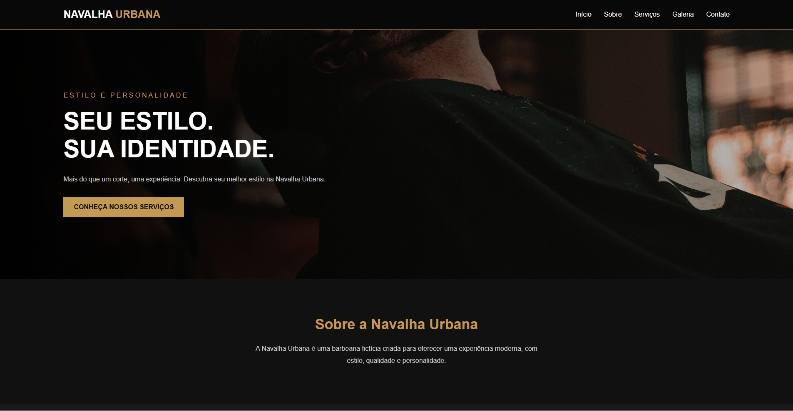

Olá! Eu sou Desenvolvedor Web.
Crio experiências digitais modernas, funcionais e responsivas.
Conhecer meus projetosSobre mim
Sou um desenvolvedor web em formação, interessado em tecnologia, programação e criação de experiências digitais. Atualmente, desenvolvo projetos utilizando HTML, CSS e JavaScript, buscando aprimorar minhas habilidades e aprender novas tecnologias. Meu objetivo é criar sites modernos, funcionais, responsivos e com uma ótima experiência para os usuários.
Meus projetos
Conheça alguns dos projetos que desenvolvi.

Bella Tavola
Site profissional de um restaurante italiano, com cardápio interativo, filtros, pesquisa, galeria e formulário de reservas demonstrativo.
HTML | CSS | JavaScript
BlueBank
Projeto de interface de um banco digital fictício, desenvolvido para praticar criação de sites modernos e responsivos.
HTML | CSS | JavaScript
Navalha Urbana
Site demonstrativo de uma barbearia fictícia, com apresentação de serviços, galeria de imagens e navegação responsiva.
HTML | CSS | JavaScriptMeus serviços
Desenvolvo sites modernos, funcionais e responsivos para apresentar negócios e projetos na internet.
Sites institucionais
Sites profissionais para apresentar empresas, serviços e informações importantes.
Sites para restaurantes
Sites com cardápios, galerias de fotos e informações sobre estabelecimentos.
Landing Pages
Páginas modernas para apresentar produtos, serviços e projetos.
Minhas habilidades
Tecnologias que utilizo para desenvolver meus projetos web.
HTML5
Estruturação de páginas e conteúdos web.
CSS3
Estilização, layouts e responsividade.
JavaScript
Interatividade e funcionalidades para sites.
Vamos conversar?
Tem uma ideia de projeto ou gostaria de conhecer melhor meu trabalho? Será um prazer apresentar minhas soluções de desenvolvimento web.
Conhecer meus projetos